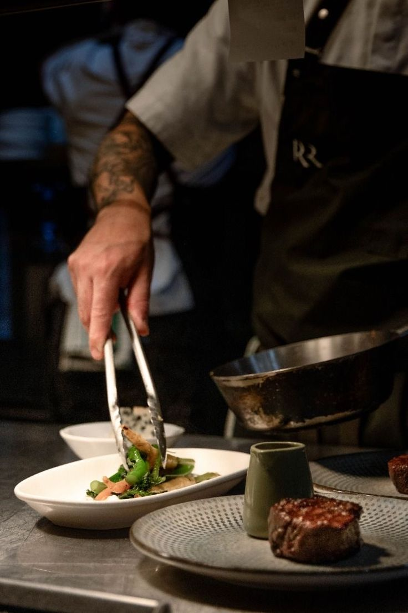
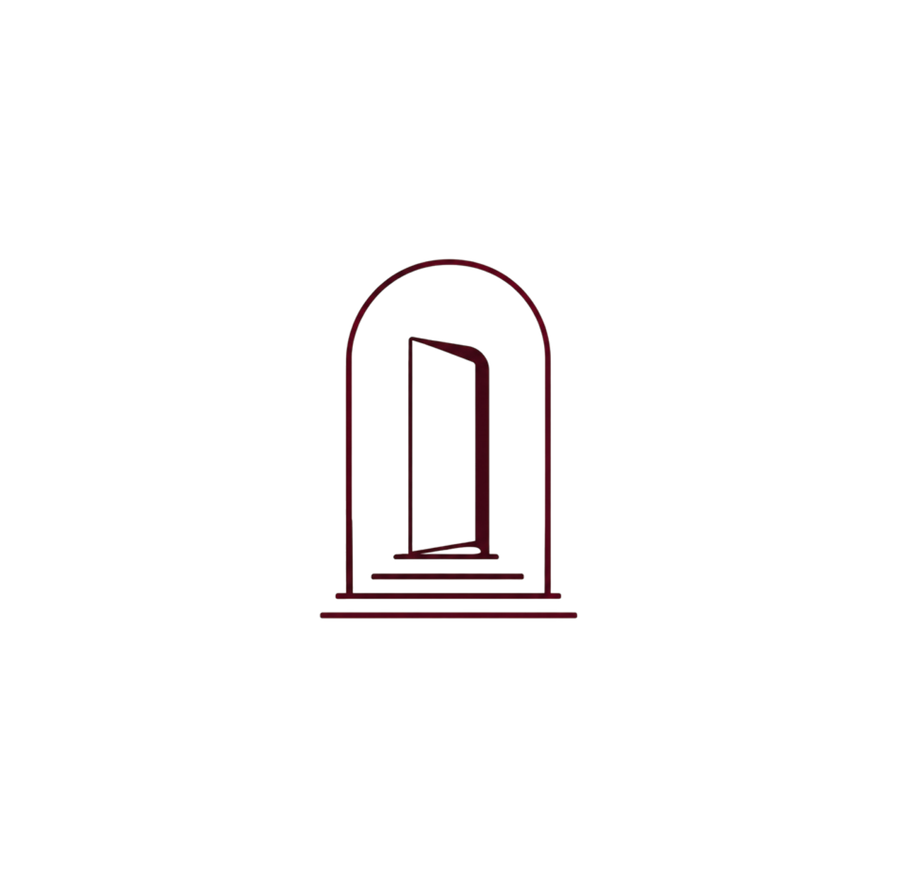
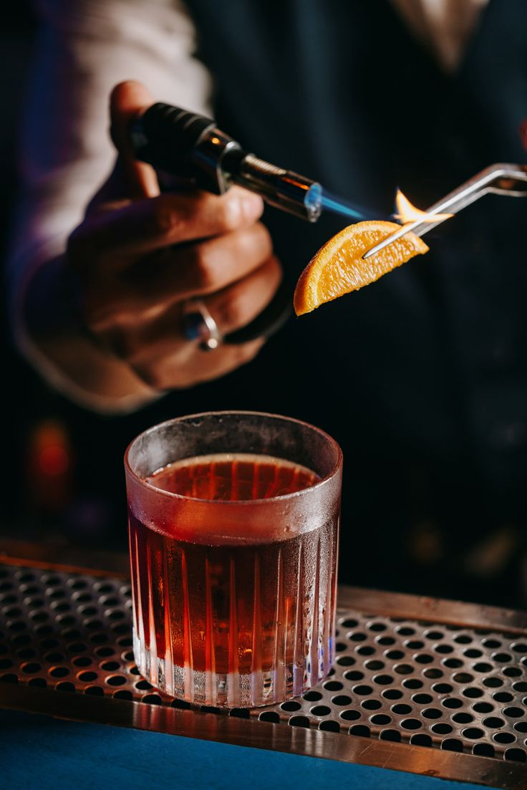
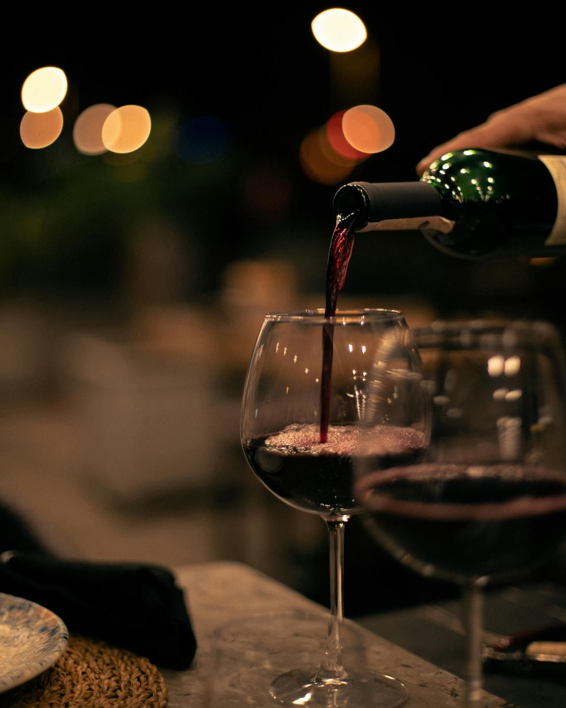
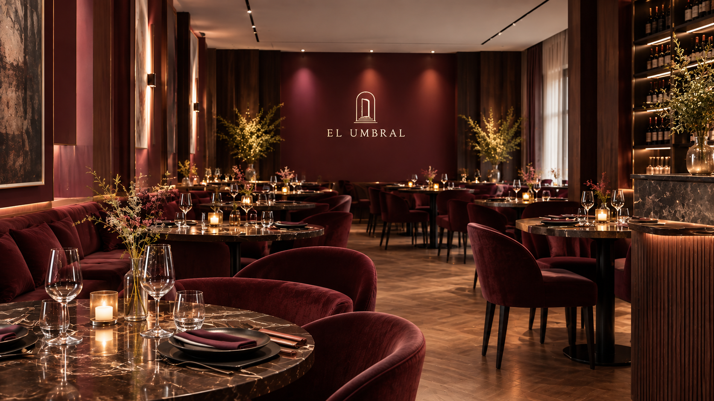

Menú degustación
Una selección de platos que recorre nuestra propuesta y cambia según la temporada.

En El Umbral reinterpretamos ingredientes argentinos desde una mirada actual. Cada plato busca sorprender, respetando el producto y su origen.
Nuestra propuesta se completa con una selección de vinos y cócteles especialmente pensados para acompañar cada momento.
Una propuesta gastronómica que combina productos de estación, cocina de autor y bebidas seleccionadas.

Una selección de platos que recorre nuestra propuesta y cambia según la temporada.

Creaciones de autor y clásicos reinterpretados para acompañar la experiencia.

Una carta cuidadosamente seleccionada para complementar cada plato.
Un ambiente íntimo, cálido y sofisticado donde cada detalle está pensado para acompañar la experiencia.
Madera oscura, mármol, iluminación tenue y una selección de materiales y objetos que crean un espacio elegante y acogedor.

Te invitamos a cruzar el umbral y descubrir una nueva forma de vivir la gastronomía argentina.
Reservá tu mesa y disfrutá de El Umbral.
Reservar mesa